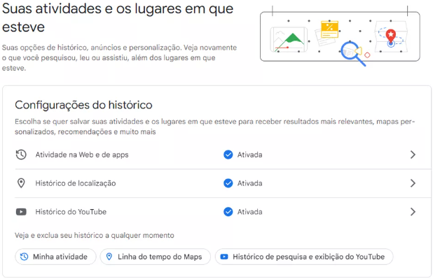

Como descobrir os dados que o Google salva sobre você?
Site permite revisar informações armazenadas por serviços como Gmail, YouTube e Maps. Entre outros itens, aplicativos da empresa mantêm alguns dados pessoais e registros sobre sua navegação na internet.
Por g1
Uma loja do Google é vista no bairro do Chelsea em Manhattan, Nova York, nos EUA, em foto de arquivo de novembro de 2021
Os serviços do Google, como Gmail, YouTube e Maps, coletam uma série de dados dos usuários para funcionarem. Os detalhes sobre o que cada plataforma tem acesso estão disponíveis em um painel da empresa, disponível neste link.

A ferramenta permite apagar alguns dados da conta e mudar as preferências sobre por quanto tempo elas ficam armazenadas. A empresa salva, entre outros itens, seus dados pessoais (nome, data de nascimento, gênero e telefone, além do e-mail) e seu histórico de navegação.
Veja abaixo como revisar o que está salvo na sua conta do Google.
Continua depois da publicidade

Dados pessoais
Ao clicar em "Informações pessoais" no painel do Google (ou neste link ), é possível revisar foto de perfil, nome, data de nascimento e gênero salvos na sua conta, além de e-mail e telefone.
- ANDROID 13: confira as principais novidades do sistema do Google
- 'FOTO RANDOM': como fazer a colagem que é febre no Instagram e no TikTok
Na página, há a seção "Escolha o que as outras pessoas podem ver", que reúne o que fica público no seu perfil. Além dos dados acima, a página pode reunir sua formação escolar e sua experiência profissional, caso você tenha informado isso ao Google em algum momento.
O painel também tem a página "Pagamentos e assinaturas", que reúne dados usadas em transações. Nesta área, a seção sobre formas de pagamento (também disponível neste link) mostra cartões de crédito salvos na conta.
Histórico de navegação

Google permite revisar registros que são feitos durante navegação em seus aplicativos
Continua depois da publicidade

Os serviços do Google fazem registros de sua atividade na internet enquanto sua conta está logada. Essas informações podem ser encontradas ao abrir a página "Dados e privacidade" e buscar a seção "Suas atividades e os lugares em que esteve" (link).
- Atividade na Web e de apps: registros sobre uso de sites e apps do Google, como busca, Chrome, Maps, Play Store, Tradutor, entre outros;
- Histórico de localização: locais que você visitou com seus dispositivos, mesmo quando não estava usando um serviço do Google – a lista de aparelhos vinculados na conta pode ser acessada neste link;
- Histórico do YouTube: vídeos assistidos e pesquisas feitas com a sua conta no serviço.
Para os três casos, há como definir em quanto tempo os dados serão excluídos automaticamente. O Google também permite desativar o armazenamento dos dados e excluir registros salvos até então.
Ferramenta do Google reúne conteúdos que usuário salvou nos serviços da empresa
Continua depois da publicidade

A ferramenta também permite encontrar em um só local conteúdos que você salvou nos serviços da empresa, incluindo comentários no YouTube, endereços no Maps, arquivos no Google Drive e contatos. Para acessar as informações, siga estes passos:
- Na página inicial do painel, clique em "Dados e privacidade";
- Busque pela seção "Dados de apps e serviços que você usa";
- Em "Apps e serviços", clique no ícone de seta para direita próximo a "Conteúdo salvo dos Serviços do Google".
Também em "Dados de apps e serviços que você usa", há o trecho "Apps de terceiros com acesso à conta". Ele permite revisar quais informações da sua conta são compartilhadas com outros serviços. Ao selecionar este item, é possível acessar retirar o acesso para os que você não usa mais.
LEIA TAMBÉM:
Continua depois da publicidade

Saiba como buscar pontos de doação de alimentos no Google Maps
Espécie rara de animal é encontrada por funcionários de fazenda em MT
Mais do G1
Eleições 2022
SUS: o que dizem os planos de governo dos candidatos à Presidência
Propostas sugerem aumentar investimentos, bem como promover campanhas de vacinação e estruturar carreiras médicas.

Ipec: colunistas analisam resultado da pesquisa presidencial desta segunda; veja vídeos
Ex-presidente Lula segue com 44% das intenções de voto no primeiro turno da eleição presidencial. Jair Bolsonaro tem 31%. Levantamento foi realizado entre 2 e 4 de setembro e tem margem de erro de 2 pontos percentuais para mais ou menos.

Pacheco e Barroso se reúnem nesta terça para discutir o piso salarial da enfermagem
Decisão do ministro do STF suspendeu o piso temporariamente. Valor de R$ 4.750 foi aprovado pela Câmara e pelo Senado.

Pai, filha e amiga morrem após carro bater em árvore em Curitiba
Segundo familiares, os três voltavam da festa de aniversário de uma das vítimas. Dedetran irá investigar as circunstâncias do acidente.

UEG abre inscrições de concurso com salários de até R$ 5,3 mil para área administrativa
Cargos são de assistente de gestão administrativa e analista de gestão governamental. Inscrições seguem até 6 de outubro.
Continua depois da publicidade


Médico goiano comemora recorde ao pescar pirarara de 1,4 metro: 'Briga de 40 minutos'
Ele contou que não tem muita experiência com pescaria e usa material emprestado. Amigos que o acompanhavam disseram que nunca tinham visto peixe desse tamanho.

Adolescente é flagrado transportando 5,5 toneladas de maconha em caminhão roubado, diz PRF
Segundo polícia, menor tentou fugir por 5 km, mas foi abordado pela corporação em Paranaiguara. Droga estava escondida em meio a galhos de mandioca; veja vídeo.


Casal e criança morrem após carreta cair em ribanceira, em Goiatuba
Imagens mostram a altura de onde caminhão despencou após perder o controle. Segundo o Corpo de Bombeiros, todos morreram ainda no local.

A misteriosa queda de um avião no mar Báltico
Pilotos da Otan que seguiram aeronave não conseguiram avistar ninguém na cabine de comando da aeronave Cessna 551.

Ipec: Lula lidera corrida presidencial em 15 estados; Bolsonaro, em 5 mais DF
Instituto concluiu divulgação de pesquisas em todos os estados, mais o DF, no último sábado. Ex-presidente está à frente em todo o Nordeste; Bolsonaro vai melhor no Centro-Oeste.
Continua depois da publicidade

Fachin cita violência política e limita decretos de Bolsonaro sobre compra de armas e munições
Liminares foram concedidas pelo ministro do STF em três ações que tiveram o julgamento suspenso no ano passado, após pedido de vista de outro ministro da corte, Nunes Marques.

Mulher invade cemitério e tenta desenterrar cadáver de ex-namorado, em MS
O casal já não estava mais junto quando ele morreu.

Jovem diz que foi esfaqueado e perdeu celular durante briga em show do Gusttavo Lima em Goiânia
Matheus Fernandes contou que foi atingido ao tentar separar confusão após amiga ser agredida por homem. Ele recebeu mais de 20 pontos nas costas.

Diretora é exonerada da função após crianças marcharem e empunharem réplicas de armas em escola de Padre Bernardo
Vídeo mostra alunos seguindo ordens de instrutor. Secretaria Estadual de Educação disse que a diretora será remanejada para outro cargo.

Em caso raro, jovem goiana tem gêmeos de pais diferentes: 'Não sabia que podia acontecer'
Caso aconteceu em Mineiros, onde a mãe mora com os filhos. Médico disse que há 20 casos semelhantes registrados no mundo.